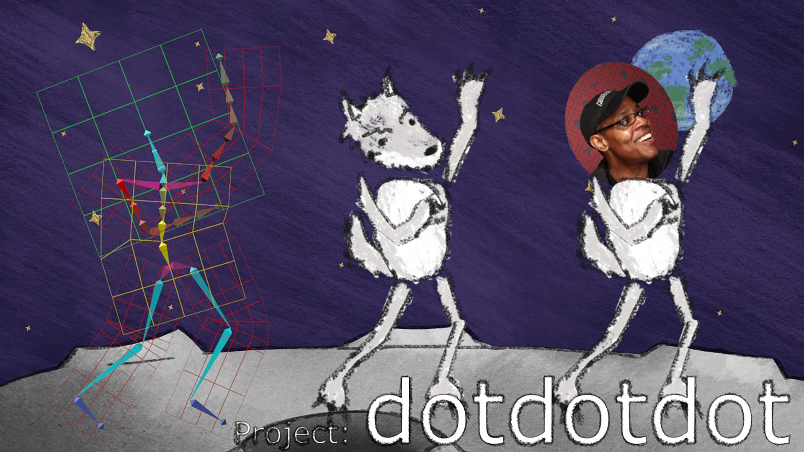
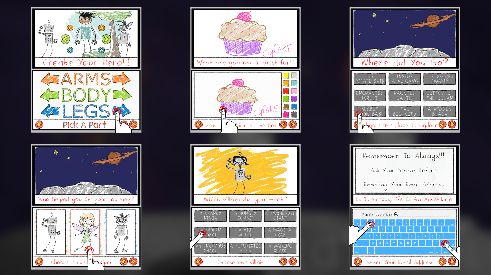

PHYSICAL LIGHTING STUDIES
My research on Physically Based Lighting started as a way to improve my skills in this field and understand the way light behaves in real life. It gradually became the main topic I've worked on in 2024 and led to the launch of my first Unreal plugin.
RESEARCH INSIGHTS
Through extensive experimentation and analysis, I've developed techniques that bridge the gap between theoretical lighting principles and practical implementation in real-time rendering engines.


IMPLEMENTATION
The culmination of this research has resulted in practical tools and techniques that can be applied across various projects, from architectural visualization to interactive experiences.